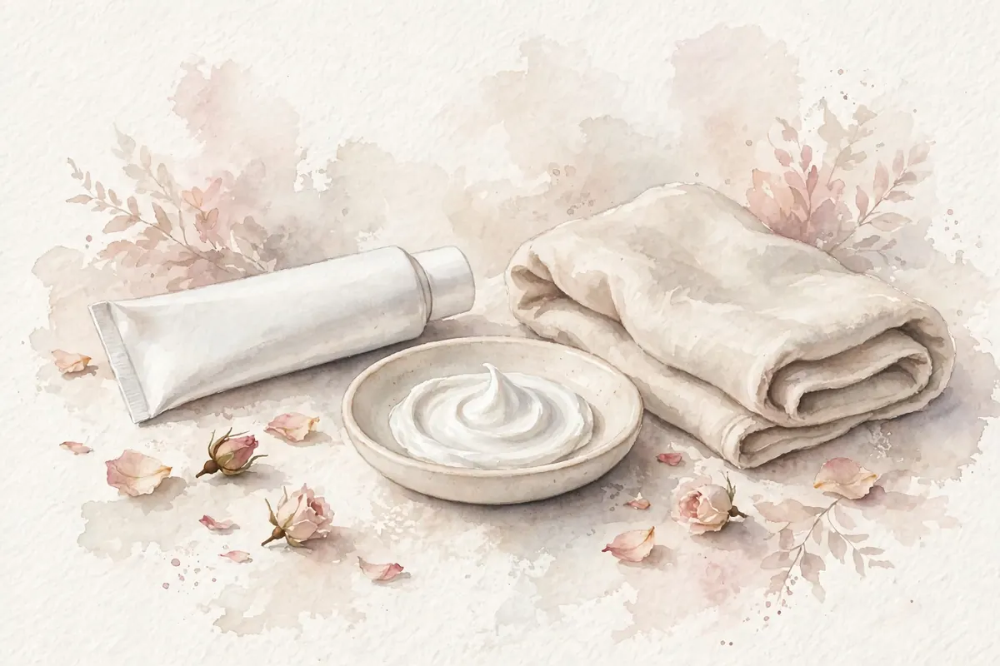

トップ ＞ ボディケア ＞ ハンドクリームの量と表示の見方：手洗いのあとに塗る段取り
ハンドクリームの量と表示の見方：手洗いのあとに塗る段取り

ハンドクリームは、手洗いの回数が多い日ほど出番が増えるアイテムです。施術の現場でも、手の乾燥や手荒れの相談の流れで「ハンドクリームはどれくらい塗ったらいいの」と聞かれることがあります。ハンドクリームは、量が少ないと手全体に行き渡らず、多いとべたつきが残るので、量の加減が分かりにくいところがあります。この記事では、ハンドクリームの量の目安と、表示の見方を整理します。特定の商品の話ではなく、ハンドクリームの使い方の考え方です。
量の目安と塗り方
まず確認したいのは、1回あたりの量の目安です。パッケージには「適量を手に取り」といった案内が書かれていることが多いですが、量の具体的な目安は商品ごとに違います。目安として、パール粒大からさくらんぼ粒大くらいが、手全体に行き渡る量の目安になることが多いです。手の大きさや、乾燥の具合によっても変わります。
塗るときは、手のひらにクリームを出し、両手を合わせて軽くのばしてから、手全体になじませます。手のひらだけでなく、手の甲や指の間、爪のまわりまで、まんべんなく広げます。指の間は、指を組むようにしてなじませると、行き渡りやすくなります。
量が足りないと感じたら、少しずつ足します。1回に多く出すより、足りない分を重ねるほうが、べたつきを抑えられます。塗ったあとに、手を軽く合わせてなじませる時間を取ると、クリームが手に広がりやすくなります。
表示で見るポイント
ハンドクリームの表示で確認しておきたいのは、香りの有無と、成分の表示です。「無香料」と書かれているものは、香りをつけていないタイプです。香りつきのものは、香りの強さが商品ごとに違うので、使う場面に合わせて選ぶのが無理のないやり方です。職場や食事の場面では、香りの控えめなものを選ぶと、周りに気を遣わずに使えます。
成分表示では、保湿成分として「グリセリン」「ワセリン」「シアバター」といった名前が書かれていることが多いです。成分名は、多く含まれているものから順に並んでいるので、どの成分が多めに入っているかを見ると、クリームの性質の目安がつかみやすくなります。
また、「手洗い後にお使いください」「就寝前にお使いください」といった、使うタイミングの案内が書かれていることもあります。表示のタイミングに従うと、使い忘れを防げます。容器の形も、チューブ、ジャー、ポンプなどいろいろあり、持ち運びやすさや、出しやすさが違います。使う場面に合った容器を選ぶのがポイントです。
塗るタイミングと使い切り
ハンドクリームを塗るタイミングは、手洗いのあとが基本です。手を洗ったあと、水分をふき取ってから塗ると、クリームが手に広がりやすくなります。水仕事のあとや、アルコールで手を消毒したあとも、塗るタイミングの目安になります。
就寝前に塗る場合は、量を少し多めにして、手袋をして寝る、という使い方をする方もいます。表示に「就寝前のご使用がおすすめです」といった案内がある場合は、それに従います。夜に塗ると、朝まで手にクリームが残りやすくなります。
使い切りの目安は、開封日をメモしておくとつかみやすくなります。チューブの場合は、使い終わりに近づくと、中身が出にくくなります。使い切るまでは、直射日光の当たらない涼しい場所で保管します。肌に合わない感じがしたときは、使用をいったんやめて、気になる場合は皮膚科などの専門家に相談してください。この記事はハンドクリームの使い方の案内であり、商品ごとに表示がある場合は、そちらが優先です。
セラフィナ「ハンドクリームは手洗いのあとがチャンスだよ。指の間や爪のまわりまで、まんべんなく広げてね」

セラフィナ｜美容の道具箱の案内役
「量と表示が分かれば、美容は失敗しない。」——セラフィナと白猫のモコが、買う前のチェックポイントを案内します。綺麗になりたい気持ちに正直に、でも表示は冷静に読むのが、このサイトの約束です。